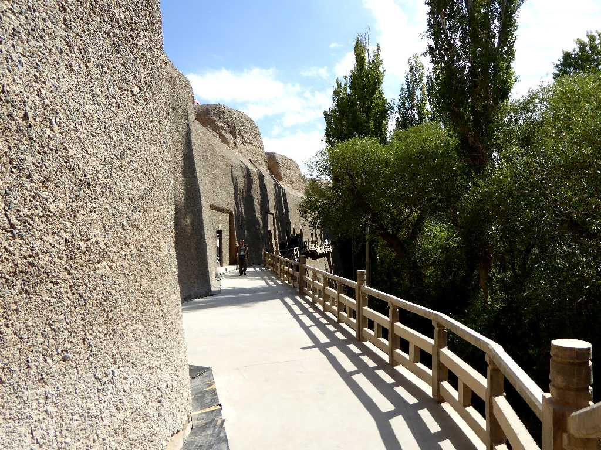
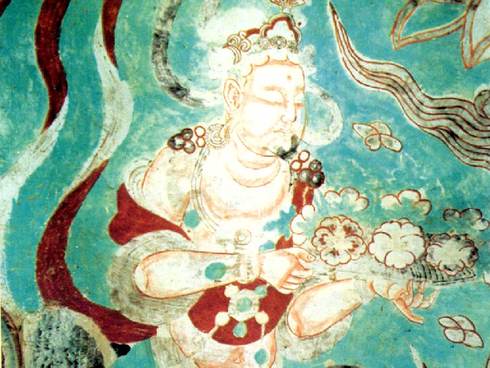
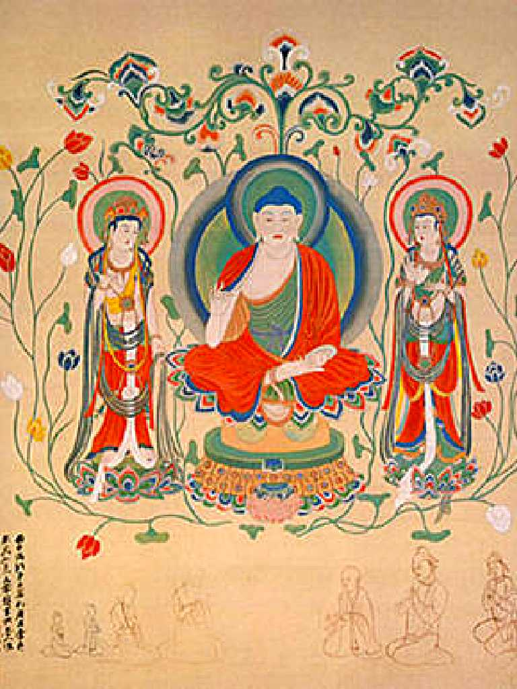
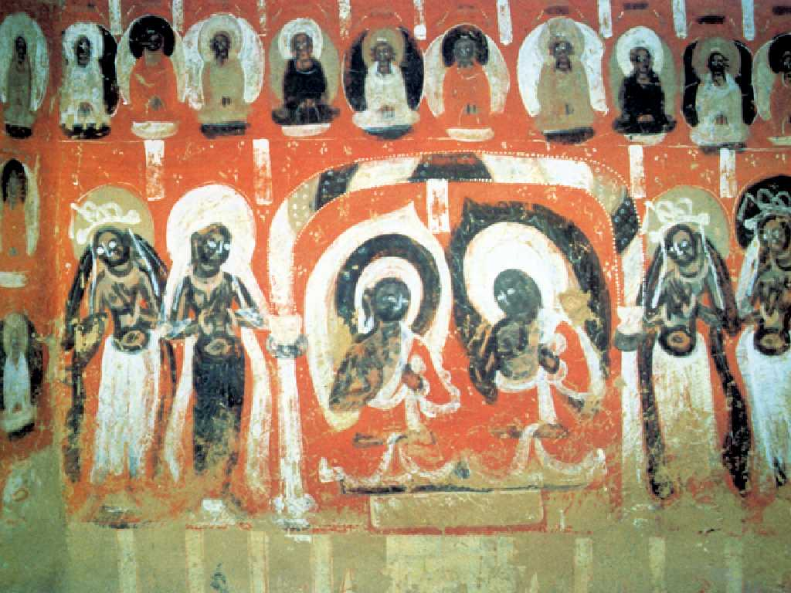
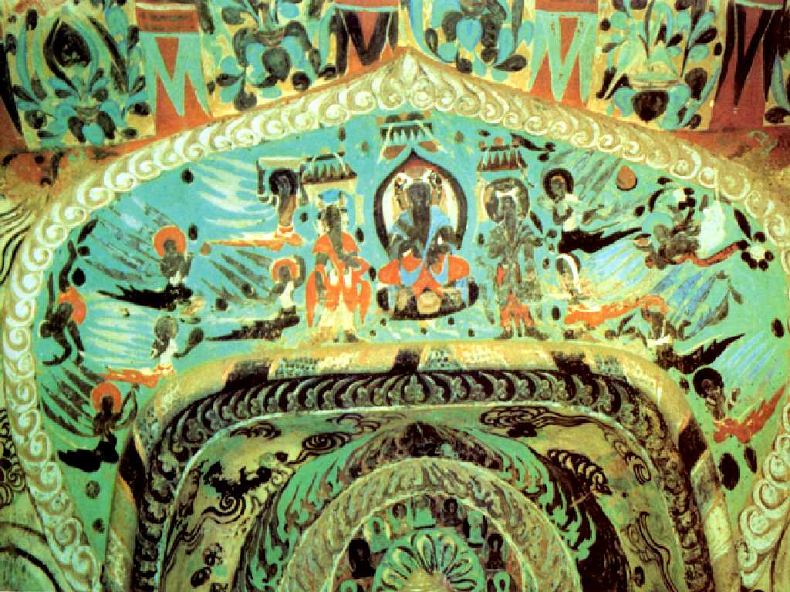

Xiqian Caves Dunhuang 敦煌 西千佛洞
北朝(439-589)時代から西夏(1032-1227)時代までの２２石窟が現存している莫高窟の西にある石窟

Cave 3 4 第３窟 第４窟
盛唐(713-765)時代の石窟 天井の飛天

Cave 5 第５窟
北魏(386-534)時代の仏教が中国に伝えられた頃のインド風の石窟

Cave 6 第６窟
北周(556-581)時代の石窟

Cave 7 第７窟
西魏(535-556)時代の石窟 三世代仏と飛天が描かれている
September 11 2015 Xiqian Caves Dunhuang 敦煌 西千佛洞